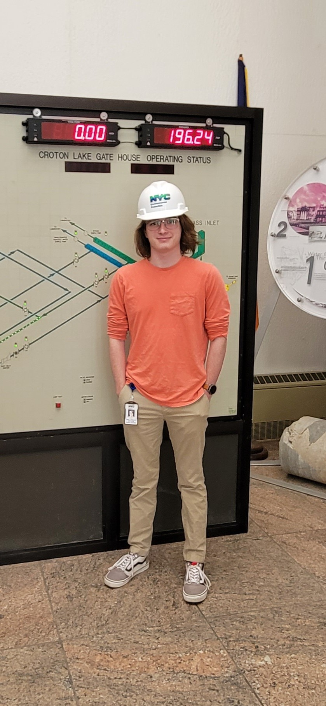

Who am I?
I am a senior Computer Science major at Clarkson University from Pawling, New York.
Goals After School
I am still in the process of working out my plans for after school is complete. I am trying to decide between pursuing a master's degree in computer science or looking for a full-time position in software engineering / programming.
What led me here? B.C.E. (Before Clarkson Era)
Before coming to Clarkson I had some computer experience, but most of my knowledge was only surface level. When I arrived at Clarkson I was a Chemical Engineering student and during my first semester decided to add Computer Science as a minor. I ended up really liking the classes that I was taking for my minor and decided that I wanted to make it my major. Since then I have been open to learning whatever I can about programming and how computers work.
What led me here? C.E. (Clarkson Era)
I am one of two Lab Directors of the Clarkson Open Source Institute, a Computer Science lab at Clarkson open to all students who are interested in computers, computer science, and computing. I am also a member of the Underwater Robotics SPEED Team and am currently in the process of rewriting a portion of their codebase to work with new hardware that will be going into the robot this year. This past summer I had an internship as a Software Engineer which required me to do some programming at a lower level than I was used to which helped me to gain a better understanding of the hardware and software tools that I was using.